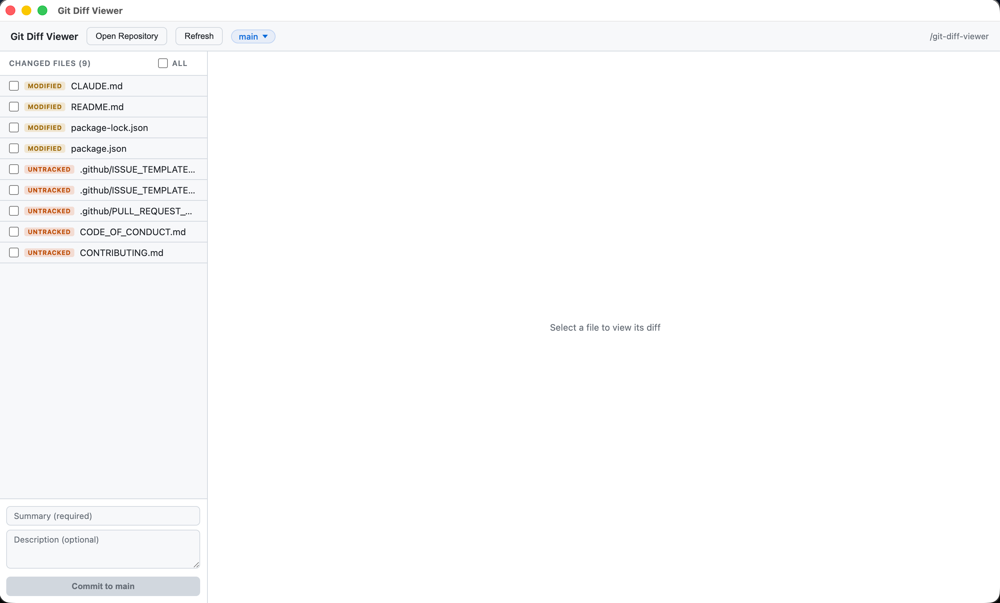

View diffs, stage files, and commit — without the overhead. Minimal, fast, and works on every platform.
Built for Linux, where GitHub Desktop isn't officially available.

A focused git GUI that does the basics well.
Syntax-highlighted additions and deletions with line numbers, just like GitHub.
Stage individual files or all at once with checkboxes. Commit with summary and description.
Switch branches, create new ones. Searchable dropdown with all local branches.
File list auto-refreshes when files change on disk. No manual refresh needed.
Quick access to previously opened repos. Open any folder via native picker.
Vanilla HTML/CSS/JS. No framework, no build step for the UI. Two runtime dependencies total.
Grab the latest release for your platform.
Get started, understand the architecture, and contribute.
macOS: Download the .dmg from Releases, open it, and drag the app to Applications. On first launch you may need to right-click the app and choose Open to bypass Gatekeeper since the app is ad-hoc signed.
Windows: Download the .exe installer and run it. The app installs and launches automatically.
Linux (Ubuntu/Debian):
sudo dpkg -i git-diff-viewer_1.0.0_arm64.debFrom source:
git clone https://github.com/sameerjoshi/git-diff-viewer.git
cd git-diff-viewer
npm install
npm startMODIFIED, UNTRACKED, DELETED, RENAMED, NEW). Click any file to see its unified diff on the right.The file list refreshes automatically when files change on disk — no need to manually refresh.
Ctrl+O / Cmd+O — Open a repository
The app follows strict Electron process separation with four files:
window.gitAPI with 12 methods and 1 event listener.Data flows left-to-right: renderer calls window.gitAPI.*, preload forwards via ipcRenderer.invoke, main.js handles and returns { ok, data } or { error } objects. No thrown exceptions cross the IPC boundary.
File watching is started when get-status is called — two chokidar watchers monitor the working tree and .git/ internals, pushing a repo-files-changed event to the renderer which triggers a status refresh.
npm run build # Linux (.deb)
npm run build:mac # macOS (.dmg)
npm run build:win # Windows (.exe)Unit tests cover the extracted business logic in git-helpers.js:
npm test # run all tests (Jest)
npm run test:watch # run in watch mode35 tests covering file status deduplication, synthetic diff generation, branch error formatting, recent repos CRUD, and window state persistence.
Contributions are welcome. See CONTRIBUTING.md for guidelines.
npm test and verify the app launches with npm start